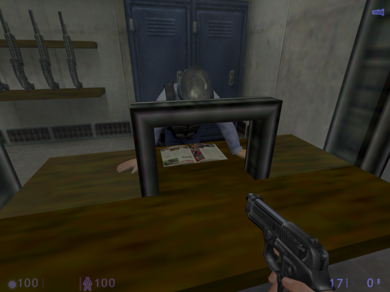

bros4life

he flips the pages too!

i'm offering moral support

OH SHOOT DAD'S HOME

i'm not gonna sit down in the tram like some loser, get out of here

enormous hallways IT MUST BE THE FUTURE!!

why do you defy me donut

maybe if you took the helmet off

i am joining you for lunch

point-counterpoint: gordon freeman, irresponsible casserole murder vs. ...
SUPER CUTE THINGS IN HALF-LIFE: BLUE SHIFT
Bonus I don’t have a cap for: The scientists in the elevator who are all gossipy and cranky when the power goes out and go I BET IT’S THE ANOMALOUS MATERIALS PEOPLE AGAIN, THEY’RE ALWAYS PUSHING THEIR EQUIPMENT TOO HARD, DABBLING IN GOD KNOWS WHAT
- 1. These two scientists who are just chilling and people-watching above the tram like bros (not pictured: there’s also a guy who misses the tram at the beginning and you can see him running for it, sucker)
- 2. This guard who’s reading a magazine on company time, he dgaf
- 3. These scientists trying to fix a computer and this guard who’s just sitting and chatting with them like he’s keeping an eye on them to make sure they don’t explode themselves or something
- 4. When they explode the computer this other scientist comes over all WHO’S RESPONSIBLE FOR THIS MESS >:( and everyone’s like NOT ME and feigns nonchalance (the guard gets told to shoo though)
- 5 & 6. HI GORDON IN A LABCOAT YOU GIANT DORK
- 7. This guy who was either dancing or arguing with that donut I really couldn’t tell
- 8. SCIENTIST AND GUARD PLAYING ARCADE GAMES TOGETHER AND THE SCIENTIST IS WINNING
- 9. TESLA TACOS
- 10. Black Mesa has their own newspaper called The Mesa Times, omg
imagine the editorials magnusson would write
barney submitting lists of things gordon has broken that week
just imagine
Bonus I do have caps for but couldn’t fit: If you keep pestering them the scientists say “why do you security guards always insist on bothering us?” which is like a million hilarious scenarios right there